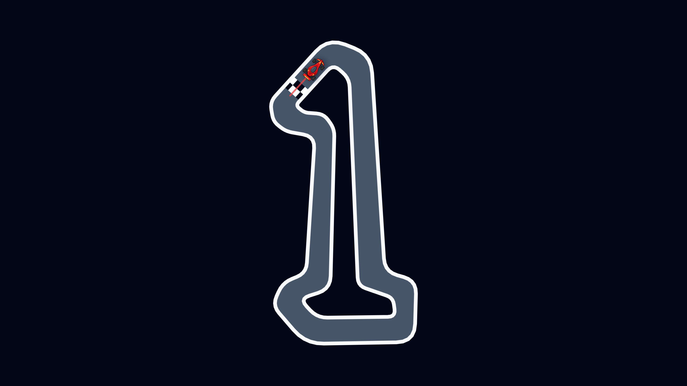

Daily
00:00 UTC
One track for everyone. The last seven days stay open, each with its own leaderboard.

00:00 UTC
One track for everyone. The last seven days stay open, each with its own leaderboard.
14 stages
Permanent stages ending on Golden Ratio. Medals unlock the next one.
1 v 1
Race a frozen ghost of someone else's verified run, and beat their time.
You only steer — A and D, the arrows, or either side of the screen. The throttle never lets up, so the whole game is your line. Walls scrape you; they don't end the lap.
The server re-drives every ranked lap before it lands on the board, to the millisecond. Your best lap comes back as a ghost to chase.